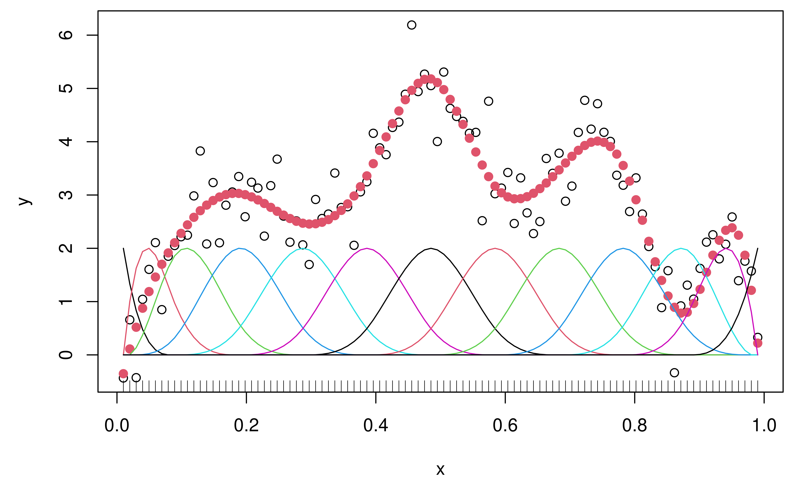
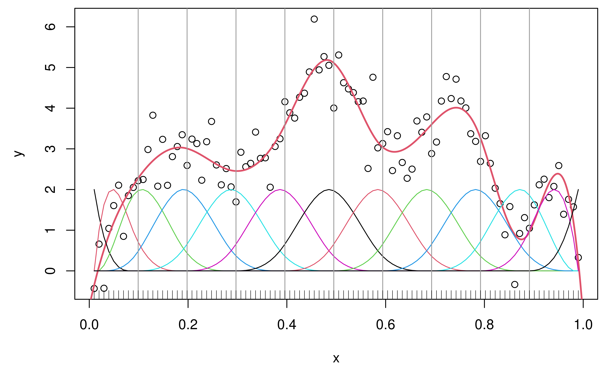
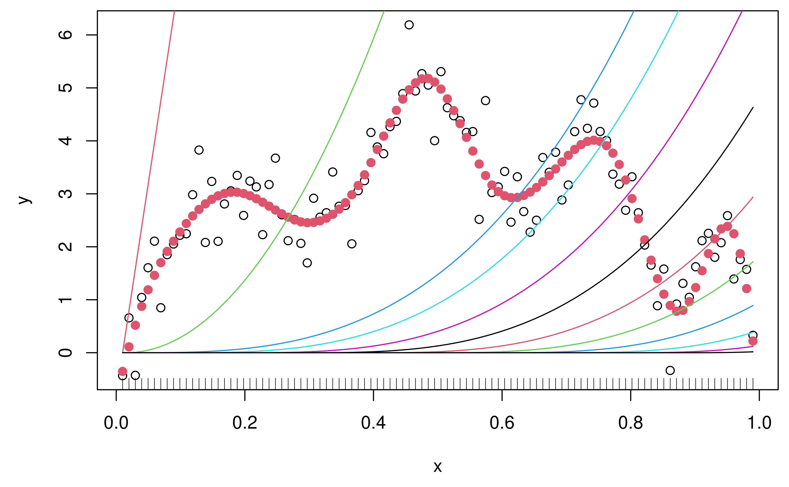

Overview
This vignette provides a brief introduction to the
dspline package. We’ll do the following:
- compute discrete derivatives;
- smooth by regression onto the space of discrete splines;
- perform interpolation in the space of discrete splines;
- check that a discrete spline’s discrete derivatives match its derivatives.
We’ll load the package before diving in to these sections.
Computing discrete derivatives
Let’s begin with a test function.
expr = expression(sin(x * (1 + x) * 7 * pi / 2) + (1 - 4 * (x - 0.5)^2) * 4)
f = function(x) eval(expr)
curve(f, n = 1000)
As usual, we can compute derivatives using D(). Below,
we show how to compute its discrete derivatives based on evaluating
f at 100 design points xd, and multiplying
these evaluations the discrete difference operator defined over the
design points. This is done using the function [d_mat_mult()]. We’ll
demonstrate this with both first and second derivatives.
n = 100
xd = 1:n / (n+1)
x = seq(0, 1, length = 1000)
# First derivatives
fd = D(expr, "x")
u1 = as.numeric(eval(fd))
vhat1 = d_mat_mult(f(xd), 1, xd)
plot(x, u1, type = "l", ylab = "First derivative")
points(xd[2:n], vhat1, col = 2, type = "o")
legend("bottomleft", lty = 1, pch = c(NA, 21), col = 1:2,
legend = c("Exact", "Discrete"))
rug(xd)
# Second derivatives
fd2 = D(fd, "x")
u2 = as.numeric(eval(fd2))
v2 = d_mat_mult(f(xd), 2, xd)
plot(x, u2, type = "l", ylab = "Second derivative")
points(xd[3:n], v2, col = 2, type = "o")
legend("bottomleft", legend = c("Exact", "Discrete"),
lty = 1, pch = c(NA, 21), col = 1:2)
rug(xd)Note that the discrete derivatives come back as a vector of length
n-k-1, with n being the number of design
points and k being the derivative order. Each discrete
derivative here is left-aligned, meaning that the kth
derivative at a given point x uses the evaluation of
f at x and k design points to the
left of x. Thus we associate the n-k-1
discrete derivatives with the design points numbered k+1
through n. (The design points xd here are
taken to be evenly-spaced, but this is not fundamental, and the design
points could instead be at arbitrary locations.)
As an alternative to [d_mat_mult()], we could form the difference operator (as a sparse matrix) using [d_mat()], and then do the matrix multiplication manually, but using [d_mat_mult()] is more efficient. It doesn’t actually form any such matrix internally, and instead performs a specialized routine to carry out the discrete derivative computations.
Discrete spline smoothing
Now we’ll smooth some noisy data, by regressing it onto the space of discrete splines of cubic degree, with 9 knots which are roughly evenly-spaced among the design points. This is done using the function [dspline_solve()].
y = f(xd) + rnorm(n, sd = 0.5)
knot_idx = 1:9 * 10
res = dspline_solve(y, 3, xd, knot_idx)
yhat = res$fit # Fitted values from the regression of y onto discrete splines
N = res$mat # Discrete B-spline basis, for visualization purposes only!
plot(xd, y, xlab = "x")
points(xd, yhat, col = 2, pch = 19)
matplot(xd, N * 2, type = "l", lty = 1, add = TRUE)
rug(xd)
As we can see, the fitted values from the regression onto the space
of discrete splines do a qualitatively reasonable job of smoothing. The
basis functions used here (i.e., covariates in the regression) are
called discrete B-splines, and are the default choice (corresponding to
basis = "N") in [dspline_solve()]. These have compact
support, just like the usual B-spline basis. While other bases are
available, for regression problems in which the knot points are a sparse
subset of the design points, the discrete B-spline basis is likely the
best choice in terms of efficiency and numerical stability. The
computational cost is linear in the number of knots. For more details,
see Section 8.1 of Tibshirani
(2020).
Relation to trend filtering
The smoothing above is done using ordinary least squares regression, with fixed knots and without regularization. A related and more advanced technique would be to use trend filtering, which places a knot at each eligible design point (rather than fixing the knots ahead of time) and performs a regularized regression onto the space of discrete splines, by penalizing the \ell_1 norm of discrete derivatives across the design points. This has the advantage of being more locally adaptive: allocating more flexibility to the fitted function dynamically, at parts of the input space in which such flexibility is warranted, rather than letting this be dictated by a given fixed knot sequence. To learn more, see the trendfilter package, or Tibshirani (2014) or Sections 1 and 2.5 of Tibshirani (2020).
Discrete spline interpolation
To go from a sequence of fitted values to a fitted function, we must interpolate in the space of cubic discrete splines. We’ll do this using [dspline_interp()].
x = seq(0, 1, length = 1000)
fhat = dspline_interp(yhat, 3, xd, x, implicit = FALSE)
plot(xd, y, xlab = "x")
lines(x, fhat, col = 2, lwd = 2)
matplot(xd, N * 2, type = "l", lty = 1, add = TRUE)
abline(v = xd[knot_idx], col = 8)
rug(xd)
The function plotted in as a thick red line above is a bona fide cubic discrete spline: it is a piecewise cubic polynomial with knots at the specified points (marked as vertical gray lines), and its discrete derivatives of orders 1 and 2 are all continuous at the knots. This visualized below.
dd1 = d_mat_mult(yhat, 1, xd)
dd2 = d_mat_mult(yhat, 2, xd)
plot(xd[2:n], dd1, xlab = "x", ylab = "First discrete derivative")
abline(v = xd[knot_idx], col = 8)
rug(xd)Matching derivatives
What about the discrete derivatives of order 3? Being a cubic
discrete spline
(piecewise cubic polynomial), these are, unsurprisingly, piecewise
constant.
inds = x > 0.05 # Exclude points near left boundary
x = x[inds]
fhat = fhat[inds]
dd3 = discrete_deriv(c(yhat, fhat), 3, xd, x)
plot(x, dd3, type = "l", ylab = "Third discrete derivative")
abline(v = xd[knot_idx], col = 8)
rug(xd[xd > min(x)])Here we used [discrete_deriv()] to compute the discrete derivatives
over a fine grid of locations x outside of the design
points xd. (Note: as used earlier, the function
[d_mat_mult()] is a convenient way to compute discrete derivatives at
the design points xd themselves.)
A special property of a kth degree discrete spline is
that their kth degree discrete derivatives match their
kth derivatives, everywhere in the domain. To check this,
we’ll need to first compute an analytic representation for the discrete
cubic spline interpolant underlying fhat, and then
differentiate it using D(). For this analytic
representation, it is most convenient to use the falling factorial
(rather than discrete B-spline) basis.
Warning: what happens below to compute and evaluate symbolic
derivatives of the analytic representation gets a bit hairy!
Importantly, you’ll never have to do this in order to use the
dspline package. It’s only done for the purpose of
verifying the claim that the discrete derivatives match the usual
derivatives.
res = dspline_solve(y, 3, xd, knot_idx, basis = "H")
yhat = res$fit # Fitted values from the regression of y onto discrete splines
H = res$mat # Falling factorial basis, for visualization purposes only!
sol = res$sol # Falling factorial basis coefficients, for expansion later
# Sanity check: the fitted values from H (instead of N) should look as before
plot(xd, y, xlab = "x")
points(xd, yhat, col = 2, pch = 19)
matplot(xd, H * 80, type = "l", lty = 1, add = TRUE)
rug(xd)
# Now build analytic expansion in terms of falling factorial bases functions.
# Unfortunately we need to separate out the terms involving inequalities, since
# D() can't properly (symbolically) differentiate through inequalities, so this
# ends up being more complicated than it should be ...
poly_terms = sprintf("%f", sol[1])
ineq_terms = "1"
for (j in 2:length(sol)) {
if (j <= 4) {
x_prod = paste(
sprintf("(x - %f)", xd[1:(j-1)]),
collapse = " * ")
poly_terms = c(
poly_terms,
sprintf("%f * %s / factorial(%i)", sol[j], x_prod, j-1))
ineq_terms = c(ineq_terms, "1")
}
else {
x_prod = paste(
sprintf("(x - %f)", xd[knot_idx[j-4] - 2:0]),
collapse = " * ")
poly_terms = c(
poly_terms,
sprintf("%f * %s / factorial(3)", sol[j], x_prod))
ineq_terms = c(
ineq_terms,
sprintf("(x > %f)", xd[knot_idx[j-4]]))
}
}
# Sanity check: the interpolant from this expression should look as before
combined_terms = paste(
paste(poly_terms, ineq_terms, sep = " * "),
collapse = " + ")
fhat = eval(str2expression(combined_terms))
plot(xd, y, xlab = "x")
lines(x, fhat, col = 2, lwd = 2)
matplot(xd, N * 2, type = "l", lty = 1, add = TRUE)
abline(v = xd[knot_idx], col = 8)
rug(xd)
# Higher-order symbolic derivative function (from help file for D())
DD = function(expr, name, order = 1) {
if(order == 1) D(expr, name)
else DD(D(expr, name), name, order - 1)
}
# Finally, compute third derivatives of falling factorial basis expansion
d3 = numeric(length(x))
for (i in 1:length(x)) {
if (x[i] <= xd[knot_idx[1]]) {
expr = str2expression(paste(poly_terms[1:4], collapse = " + "))
}
else {
j = max(which(x[i] > xd[knot_idx])) + 4
expr = str2expression(paste(poly_terms[1:j], collapse = " + "))
}
d3[i] = eval(DD(expr, "x", 3), list(x = x[i]))
}
plot(x, d3, type = "l", ylab = "Third derivative")
lines(x, dd3, col = 2, lty = 2, lwd = 2)
abline(v = xd[knot_idx], col = 8)
legend("bottomleft", lty = 1:2, col = 1:2,
legend = c("Exact", "Discrete"))
rug(xd[xd > min(x)])